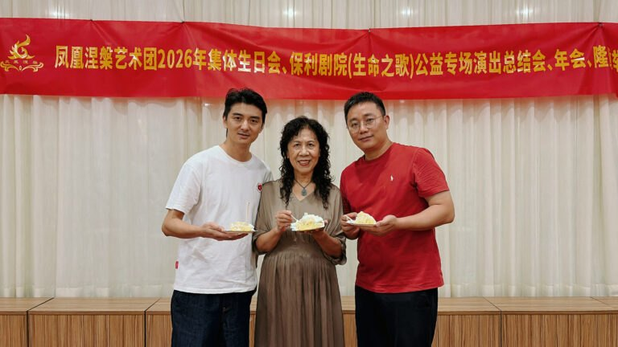
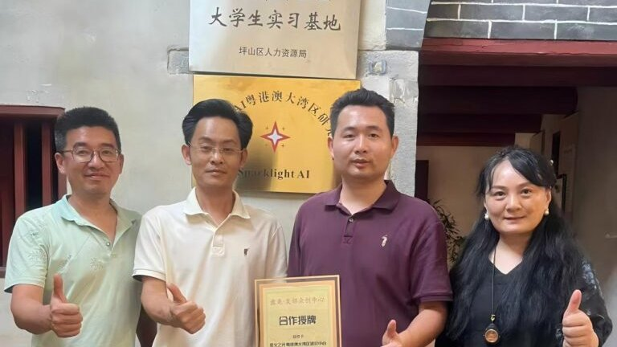
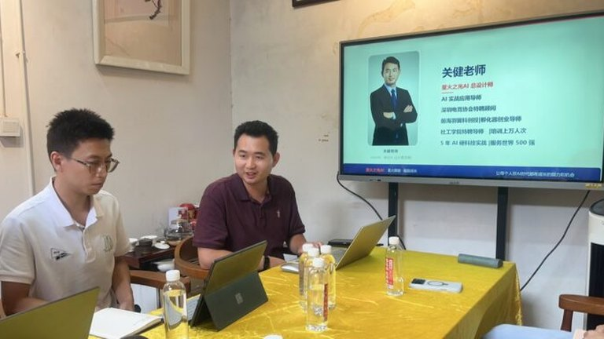
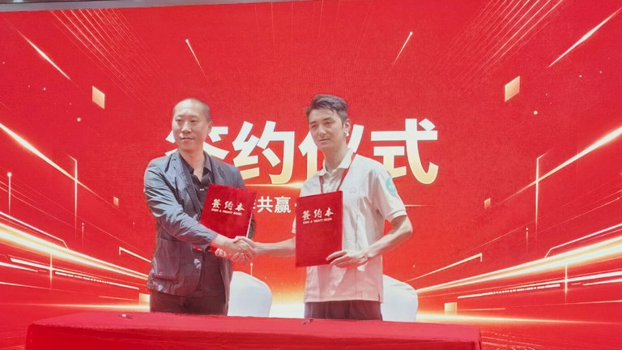
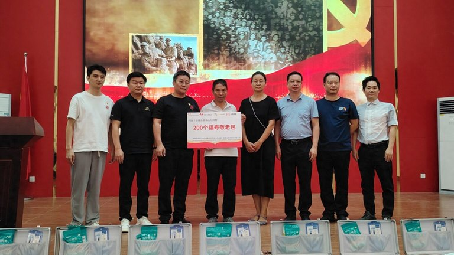
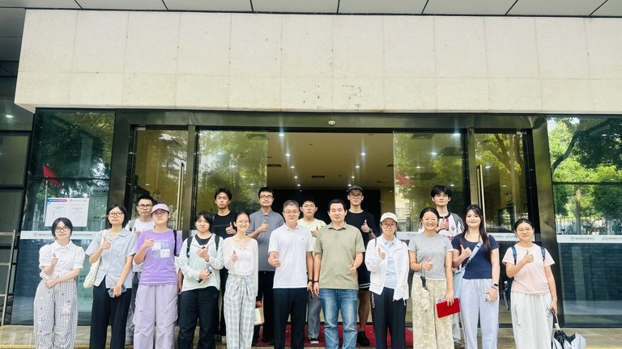
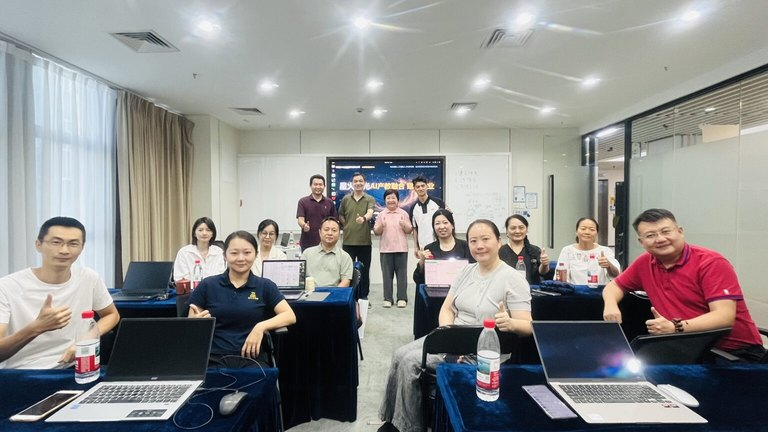
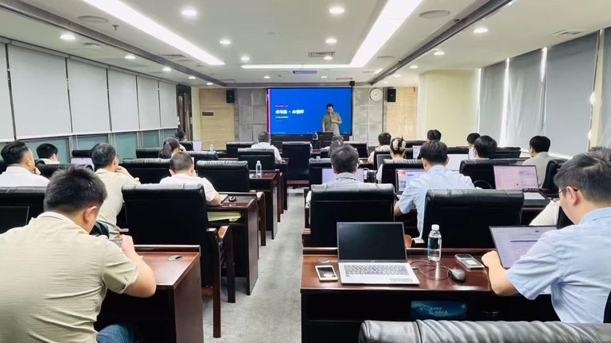
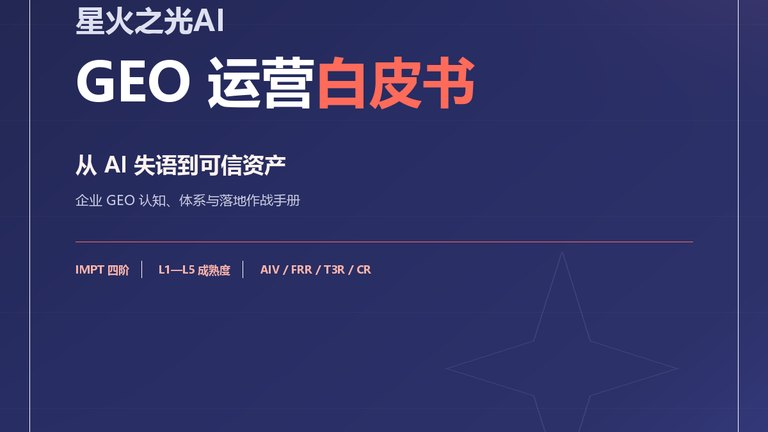

星火之光AI连续六年参与公益｜携手外婆关爱基金陪伴凤凰涅槃艺术团举办集体生日会
2026年11月3日下午，深圳市凤凰涅槃艺术团携手深圳市关爱行动公益基金会·外婆关爱基金举办团员集体生日会。深圳星火之光传媒有限公司（星火之光AI）作为爱心企业为团员定制生日蛋糕，外婆关爱基金送上180盒长寿面。这是自2021年起连续第六年为艺术团筹办集体生日会。

2026年11月3日下午，深圳市凤凰涅槃艺术团携手深圳市关爱行动公益基金会·外婆关爱基金举办团员集体生日会。深圳星火之光传媒有限公司（星火之光AI）作为爱心企业为团员定制生日蛋糕，外婆关爱基金送上180盒长寿面。这是自2021年起连续第六年为艺术团筹办集体生日会。

2026年11月3日，盘龙世居与星火之光AI签署合作协议，星火之光AI人工智能粤港澳大湾区研究中心同期挂牌成立。中心为星火之光人工智能（深圳）有限公司内设研究机构，定位AI原生组织与智能体经济，独立域名sparklight-aios.com，聚焦组织怎么改、方法怎么验、人怎么培养，产出方法、工具、标准、人。

2026年11月3日下午，星火之光AI总设计师关健老师受邀走进深圳坪山盘龙世居，为盘龙世居·友邻众创中心的企业主与OPC（一人公司）带来AI应用产业落地实战培训，用WorkBuddy串联经营动作、用AI产出对外宣传演示文稿。

2026年10月24日，星火之光AI与壹元链·老郎中 在深圳龙岗中宸国际酒店签署战略合作协议，共同打造「无梗中国」健康 IP，以 AI Native 与品牌 GEO 能力赋能 OPC（一人公司）大健康产业落地；星火之光AI总设计师关健老师现场分享「AI Native + OPC」。

2026年10月21日至22日，星火之光AI跟随深圳市关爱行动公益基金会·外婆关爱基金，赴汕尾海丰开展「缅怀革命烈士，致敬老区群众」系列公益活动：10月21日慰问城东镇赤山村老区长者，10月22日上午在红宫红场旧址彭湃铜像广场举行纪念彭湃烈士诞辰130周年敬花仪式。

2026年10月17日下午，星火之光AI关健老师为大学生志愿者开展AI应用实战培训，把AI从「听说过」练成「用得上」。

2026年10月15日，星火之光AI获聘益加益学苑、罗勒咨询顾问，三方携手面向企业开展 AI 应用实战赋能；受聘当日，星火之光AI总设计师关健老师在深圳南山软件产业基地带来首场「AI 应用实战赋能」专场，以「道法术器」方法论把 AI 应用能力系统建进企业团队。

2026年10月9日至10日，星火之光AI总设计师关健老师受邀走进广西南宁某国企，开展为期两天的「Harness + Agent 赋能企业 AI 落地」实战培训。课程以企业级智能体（Agent）为主线，依托自研 Harness 编排框架，赋能企业把业务场景跑通为可治理、可复用的智能体系统，打造企业 AI 应用落地统一底座。

2026年10月，星火之光AI在官网公布《星火之光AI GEO运营白皮书》V1.0（sparklight-ai.com/geobook）。白皮书以T/CGCC 119-2026与T/ZDMIA 002—2026两项标准为方法基线，十章正文加五个附录，给出IMPT四阶进化体系、L1–L5成熟度标尺、五平台实测口径与90天落地路线图，全文公开可读。